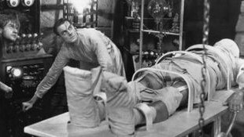

1930s – The Origin of Horror
The 1930s marked the birth of horror cinema as a recognized genre, with Universal Studios leading the way. Iconic monsters like Dracula, Frankenstein, and The Mummy introduced audiences to gothic horror, atmospheric storytelling, and memorable performances. These films established many of the tropes and archetypes that would define horror for decades to come.
Dracula (1931)
This version of Bram Stoker's novel brought Bela Lugosi's classic interpretation of Count Dracula to the screen. The film's haunting mood, dark cinematography, and Lugosi's frightening performance set the standard for the many vampire movies that followed.

Frankenstein (1931)
James Whale directed this adaptation of Mary Shelley's book, which made Boris Karloff a star as the tragic Monster. The film's theme of science out of control and Karloff's pantomime acting have established it as a genre classic.
The Mummy (1932)
Starring Boris Karloff as the brought-back-to-life Imhotep, The Mummy blended supernatural horror and romance when the brought-back-to-life priest seeks out his lost love. Its gruesome visuals and ancient Egyptian mythology added a new dimension to horror.
King Kong (1933)
Though often classified as a monster-adventure film, King Kong had strong horror elements, with its terrifying depiction of a giant ape terrorizing New York City. The film’s groundbreaking stop-motion effects made it a milestone in special effects history.